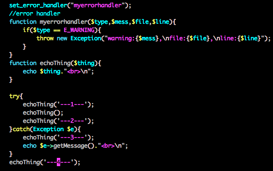
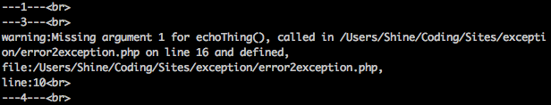

PHP错误级别&配置
display_errors = ON/OFF ;开启关闭错误报告
定义和用法：
error_reporting(E_ALL) 设置 PHP 的报错级别并返回当前级别。
或php.ini：error_reporting = E_WARNING & E_NOTICE
函数语法：
error_reporting(report_level)
如果参数 level 未指定，当前报错级别将被返回。下面几项是 level 可能的值：
值 常量 描述
1 E_ERROR 致命的运行错误。错误无法恢复，暂停执行脚本。
2 E_WARNING 运行时警告(非致命性错误)。非致命的运行错误，脚本执行不会停止。
4 E_PARSE 编译时解析错误。解析错误只由分析器产生。
8 E_NOTICE 运行时提醒(这些经常是你代码中的bug引起的，也可能是有意的行为造成的。)
16 E_CORE_ERROR PHP启动时初始化过程中的致命错误。
32 E_CORE_WARNING PHP启动时初始化过程中的警告(非致命性错)。
64 E_COMPILE_ERROR 编译时致命性错。这就像由Zend脚本引擎生成了一个E_ERROR。
128 E_COMPILE_WARNING 编译时警告(非致命性错)。这就像由Zend脚本引擎生成了一个E_WARNING警告。
256 E_USER_ERROR 用户自定义的错误消息。这就像由使用PHP函数trigger_error（程序员设置E_ERROR）
512 E_USER_WARNING 用户自定义的警告消息。这就像由使用PHP函数trigger_error（程序员设定的一个E_WARNING警告）
1024 E_USER_NOTICE 用户自定义的提醒消息。这就像一个由使用PHP函数trigger_error（程序员一个E_NOTICE集）
2048 E_STRICT 编码标准化警告。允许PHP建议如何修改代码以确保最佳的互操作性向前兼容性。
4096 E_RECOVERABLE_ERROR 开捕致命错误。这就像一个E_ERROR，但可以通过用户定义的处理捕获（又见set_error_handler（））
8191 E_ALL 所有的错误和警告(不包括 E_STRICT) (E_STRICT will be part of E_ALL as of PHP 6.0)
自定义PHP的错误报告处理方式
set_error_handler(callback[,error_types = E_ALL | E_STRICT]);
function callback($error_type,$error_message,$error_file,$error_line)
设置一个用户的函数来处理脚本中出现的错误。不再是系统定义的直接输出，影响界面。
此时，php.ini的错误级别error_reporting不再有效，而是由callback函数控制。
set_exception_handler(callback)
设置默认的异常处理程序，用于没有用try/catch块来捕获的异常。在callback调用后异常会中止。
错误日志(文件)
错误配置：
-
log_errors = On/OFF ;日志文件是否开启，
-
脚本中修改配置：ini_set(“display_errors”,”off");
脚本中获取配置：ini_get(“display_errors");
在php文件中使用error_log()函数来记录日志，即可将信息写入error_log指定的日志文件了。
error_log未开启时，默认写到web服务器(nginx)的错误日志中。每个虚拟机可指定自己的日志。
error_log = “php_errors.log" ;Php错误日志文件（指定文件地址）
error_log = syslog ;Php错误将会写入到系统日志中
log_errors_max_log=1024 ;每个日志项的最大长度
日志文件位置：
系统日志
服务器日志(每个虚拟机可能配置不同)
自定义日志文件
PHP异常（Exception）
结构：try{} catch(Exception $e){echo $e->getMessage();}
throw new Exception(“异常");
和Java基本一致，没啥说的。但是如何让系统错误，自动异常抛出？
如下图所示，使用set_error_handler：

此时，就可以通过第二点：自定义错误的方式，判断不同的error，抛出不同的Exception。
输出：

可见，Warning被handler处理，抛出的Exception，被try catch结构处理了。